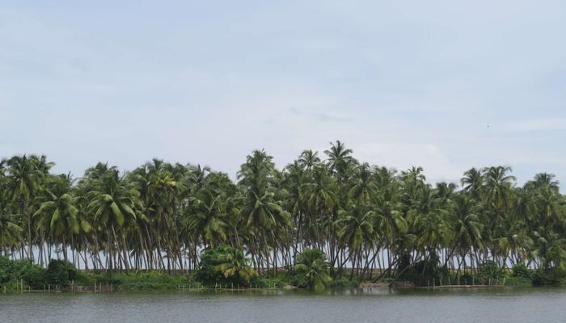
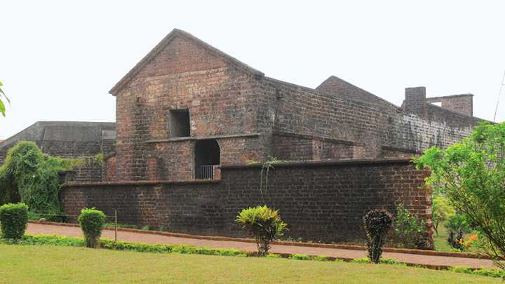
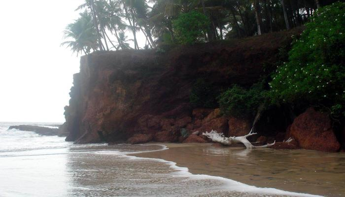
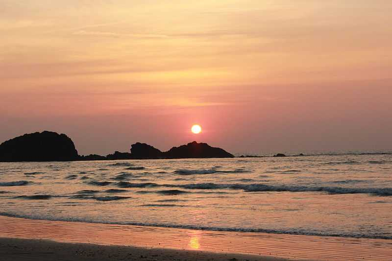

Kavil Pattanam, now called Kavvayi, has been recreated into a beautiful island.Spread over the districts of Kannur and Kasaragod, the Kavvayi islands, also called Kavvayi Kayal) are the largest backwater island group in north Kerala.Historically, kavil Pattanam used to be the hub for spice and gems trade, done through the port of Malabar, which also brought in precious Damascus steel.
St Angelos Fort is definitely one of the most popular and frequently visited attractions of Kannur.The polished yet prehistoric structure of this fortress oozes with unadulterated elegance and overwhelming power.Standing ashore in the Arabian sea, St Angelos Fort enjoys a panoramic and unobstructed view of the diorama created by the merger of the magnetic waves and the azure waters.
The hidden pearl of the North, offers a wonderful water view along with soft sand and rock formations that one can sleep or rest on.Kizhunna is an extremely secluded beach in Kannur that is frequented by those who prioritise solitude over all other characteristics.The gentle wind and warm sands make for a delightful blend to simply have a stroll or a relaxing sunbath in the middle of the day.
Muzhappilangad Beach is famous for being Kerala's only drive-in beach. At about 7km from Thalassery in Kannur, you have a 4 km stretch of sand that awaits you to simply drive along as you soak in the view of the beautiful Malabar Coast.Along the way, one gets to munch on delicacies from a number of shacks that offer authentic Malabar cuisine.
